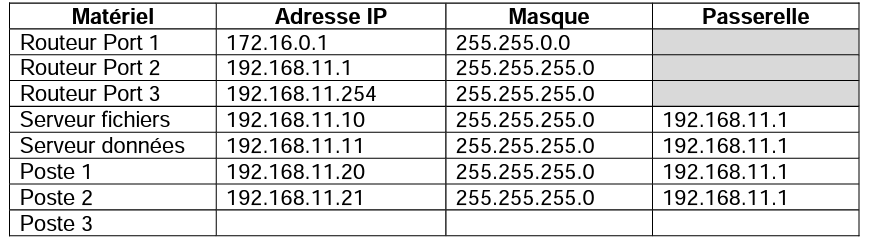
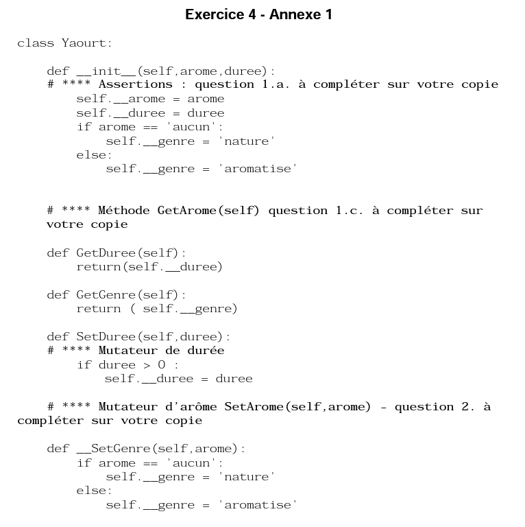

Sujet Libre 2 2021 cor
| Thème : Sujet écrit BAC |
|---|
| BAC | Candidat Libre Juin 2021 - Sujet 2 |
|---|
Dès que ce sujet vous est remis, assurez-vous qu’il est complet.
Ce sujet comporte 13 pages numérotées de 1/13 à 13/13.
Le candidat traite au choix 3 exercices parmi les 5 exercices proposés.
Chaque exercice est noté sur 4 points.
Exercice n°1 - 4 points⚓︎
Principaux thèmes abordés : protocoles de communication, architecture d’un réseau et protocoles de routage.
Les parties A et B sont indépendantes.
Partie A : Réseau
Q.1.
Parmi les termes ci-dessous, préciser celui qui désigne l'ensemble des règles de communication utilisées pour réaliser un service particulier sur le réseau ?
| □ Architecture | □ Protocole | □ Paquet |
|---|---|---|
Correction
Protocole
Q.2.
On considère le schéma réseau de l’entreprise Lambda :

Parmi les quatre propositions suivantes (Routeur, Commutateur (Switch), Contrôleur WIFI et Serveur), préciser celle qui correspond à :
a) L’élément A
b) L’élément B
Correction
a) élément A : Routeur
b) élément B : Switch
Q.3.
En reprenant le schéma de la question 2. et le tableau d’adressage du réseau de l'entreprise Lambda, recopier sur votre copie et compléter la ligne du tableau du poste 3 :

Correction

Partie B
L’extrait de la table de routage d’un routeur R1 est donné ci-dessous :

Q.1.
Indiquer sur votre copie les adresses IP du(des) réseau(x) directement connectés à ce routeur.
Correction
Les adresses IP des réseaux directement connectés au routeur R1 (métrique égale à 0) sont : 10.0.0.0, 172.16.0.0 et 192.168.0.0
Q.2.
Indiquer sur votre copie l’interface utilisée pour transférer les paquets contenant les adresses IP destination suivantes :
| Adresse IP destination | Interface Machine ou Port |
|---|---|
| 192.168.1.55 | |
| 172.18.10.10 |
Correction

Q.3.
On considère un réseau selon le schéma ci-dessous.

Recopier sur votre copie et compléter la table de routage simplifiée du Routeur1 (R1) (cidessous) en prenant comme métrique le nombre de routeurs à « traverser » avant d’atteindre le réseau de la machine destinataire.

Correction
La question n’est pas très claire. Est-ce que l’on devrait considérer toutes les routes possibles pour atteindre un routeur donné ou seulement la route la plus courte ? La première solution étant très très longue, j’ai choisi de traiter la deuxième.

Exercice n°2 - 4 points⚓︎
Principaux thèmes abordés : structure de données (tableaux, dictionnaires) et langages et programmation (spécification).
Objectif de l’exercice :
Les Aventuriers du Rail© est un jeu de société dans lequel les joueurs doivent construire des lignes de chemin de fer entre différentes villes d'un pays.
La carte des liaisons possibles dans la région Occitanie est donnée en annexe 1 de l’exercice 2. Dans l’annexe 2 de l’exercice 2, les liaisons possédées par le joueur 1 sont en noir, et celles du joueur 2 en blanc. Les liaisons en gris sont encore en jeu.
Codages des structures de données utilisées :
- Liste des liaisons d'un joueur : Toutes les liaisons directes (sans ville intermédiaire) construites par un joueur seront enregistrées dans une variable de type "tableau de tableaux".
Le joueur 1 possède les lignes directes "Toulouse-Muret", "Toulouse-Montauban", "Gaillac-St Sulpice" et "Muret-Pamiers" (liaisons indiquées en noir dans l’annexe 2 de l’exercice 2). Ces liaisons sont mémorisées dans la variable ci-dessous.
liaisonsJoueur1 = [ ["Toulouse","Muret"], ["Toulouse","Montauban"], ["Gaillac","St Sulpice"], ["Muret","Pamiers"] ]
["Toulouse","Muret"] ou ["Muret","Toulouse"].Par contre, le tableau
["Toulouse","Mazamet"] n'existe pas, puisque la ligne Toulouse-Mazamet passe par Castres.- Dictionnaire associé à un joueur : On code la liste des villes et des trajets possédée par un joueur en utilisant un dictionnaire de tableaux. Chaque clef de ce dictionnaire est une ville de départ, et chaque valeur est un tableau contenant les villes d'arrivée possibles en fonction des liaisons possédées par le joueur.
Le dictionnaire de tableaux du joueur 1 est donné ci-dessous :
DictJoueur1 = {
"Toulouse":["Muret","Montauban"],
"Montauban":["Toulouse"],
"Gaillac":["St Sulpice"],
"St Sulpice":["Gaillac"],
"Muret":["Toulouse","Pamiers"],
"Pamiers ":["Muret"]
}
Q.1.
Expliquer pourquoi la liste des liaisons suivante n'est pas valide :
tableauliaisons = [["Toulouse","Auch"], ["Luchon","Muret"], ["Quillan","Limoux"] ]
Correction
La liste proposée n’est pas valide car la liaison [“Luchon”, “Muret”] n’est pas directe.
Q.2.
Cette question concerne le joueur n°2 (Rappel : les liaisons possédées par le joueur n°2 sont représentées par un rectangle blanc dans l’annexe 2 de l’exercice 2).
a) Donner le tableau liaisonsJoueur2, des liaisons possédées par le joueur n°2.
b) Recopier et compléter le dictionnaire suivant, associé au joueur n°2 :
python
DictJoueur2 = { "Toulouse":["Castres","Castelnaudary"],
...
}
Correction
2.a)
liaisonsJoueur2 = [["Toulouse", "Castres"],
["Toulouse", "Castelnaudary"],
["Castres", "Mazamet"],
["Castelnaudary", "Carcassonne"],
["Tarbes", "St Gaudens"]]
2b)
DictJoueur2 = {
"Toulouse" : [ "Castres", "Castelnaudary"],
"Castres" : ["Toulouse", "Mazamet"],
"Castelnaudary" : ["Toulouse", "Carcassonne"],
"Mazamet" : ["Castres"],
"Carcassonne" : ["Castelnaudary"],
"Tarbes" : ["St Gaudens"],
"St Gaudens" : ["Tarbes"]
}
Q.3.
À partir du tableau de tableaux contenant les liaisons d'un joueur, on souhaite construire le dictionnaire correspondant au joueur.
Une première proposition a abouti à la fonction construireDict ci-dessous.
| 🐍 Script Python | |
|---|---|
1 2 3 4 5 6 7 8 9 10 11 12 13 14 15 16 | |
a) Écrire sur votre copie un assert dans la fonction construireDict qui permet de vérifier que la listeLiaisons n’est pas vide.
b) Sur votre copie, donner le résultat de cette fonction ayant comme argument la variable liaisonsJoueur1 donnée dans l’énoncé et expliquer en quoi cette fonction ne répond que partiellement à la demande.
c) La fonction construireDict, définie ci-dessus, est donc partiellement inexacte.
Compléter la fonction construireDict pour qu’elle génère bien l’ensemble du dictionnaire de tableaux correspondant à la liste de liaisons données en argument. À l’aide des numéros de lignes, on précisera où est inséré ce code.
Correction
3a)
assert len(listeLiaisons)!= 0, "la liste est vide"
3b) Résultat de l’exécution de la fonction construireDict :
{'Toulouse': ['Castres', 'Castelnaudary'],
'Castres': ['Mazamet'],
'Castelnaudary': ['Carcassonne'],
'Tarbes': ['St Gaudens']}
La fonction gère la liaison A-B mais pas la liaison B-A. Par exemple, pour la clé “Toulouse “ on retrouve bien “Castelnaudary” dans le tableau alors que pour la clé “Castelnaudary”, on ne retrouve pas “Toulouse “ dans le tableau.
3c)
def construireDict(listeLiaisons):
assert len(listeLiaisons)!= 0, "la liste est vide"
Dict={}
for liaison in listeLiaisons :
villeA = liaison[0]
villeB = liaison[1]
if not villeA in Dict.keys() :
Dict[villeA]=[villeB]
else :
destinationsA = Dict[villeA]
if not villeB in destinationsA :
destinationsA.append(villeB)
if not villeB in Dict.keys() :
Dict[villeB]=[villeA]
else :
destinationsB = Dict[villeB]
if not villeA in destinationsB :
destinationsB.append(villeA)
return Dict


Exercice n°3 - 4 points⚓︎
Principaux thèmes abordés : bases de données (modèle relationnel, base de données relationnelle et langage SQL).
Dans notre monde, l’information a de plus en plus de valeur et d’importance mais nous sommes de plus en plus confrontés à l’infobésité.
Considérons l’utilisation des données issues de la table de Mendeleïev (tableau périodique des éléments). Il est contraignant de faire des recherches sur des moteurs dédiés à chaque fois qu’une valeur est nécessaire (masse volumique, rayon de covalence, point de fusion…).
Les lignes 3, 4 et 5 de cette table Mendeleïev ont permis de construire, en annexe 1 de l’exercice 3, une base de données des différents atomes correspondants.
Q.1.
Donner le nom du langage informatique utilisé pour accéder aux données dans une base de données ?
Correction
Pour effectuer des requêtes sur une base de données relationnelle, on utilise le langage SQL
Q.2.
a) Lister les différents attributs des tables ATOMES et VALENCE en précisant le type du domaine de chacun.
b) Déterminer si des attributs de la table ATOMES peuvent avoir un rôle de clé primaire et/ou de clé étrangère. Justifier.
c) Donner le schéma relationnel pour les deux tables ATOMES et VALENCE.
Correction
2a
ATOME (Z : INT, nom : TEXT, Sym : TEXT, L : INT, C : INT, masse_atom : FLOAT)
VALENCE (Col : INT, Couche : TEXT)
2b)
l’attribut Z peut jouer le rôle de clé primaire car il existe un Z unique pour chaque élément chimique.
l’attribut C va jouer le rôle de clé étrangère car cet attribut va permettre d’établir une “liaison” avec l’attribut Col de la table VALENCE
2c)
ATOME (Z : INT, nom : TEXT, Sym : TEXT, L : INT, #C : INT, masse_atom : FLOAT)
VALENCE (Col : INT, Couche : TEXT)
Q.3.
Donner les réponses des deux requêtes suivantes :
a)
SELECT nom FROM ATOMES WHERE L='3' ORDER BY Sym
SELECT DISTINCT C FROM ATOMES
Correction
3a)
On obtient la liste de nom d’atomes suivante :
aluminium, argon, chlore, magnesium, sodium, phosphore, silicium, soufre
3b)
On obtient la liste des colonnes :
1, 2 ,3 ,4 ,5, 6, 7, 8, 9, 10, 11, 12, 13, 14, 15, 16, 17, 18
Q.4.
Donner la requête SQL :
a) Pour afficher le nom et la masse atomique des atomes.
b) Pour afficher le symbole des atomes dont la couche de valence est s.
Correction
4a)
SELECT nom, masse_atom
FROM ATOMES
4b)
SELECT Sym
FROM ATOMES
INNER JOIN VALENCE ON ATOMES.C = VALENCE.Col
WHERE Couche = 's'
Q.5.
On a remarqué une erreur de saisie dans la table ATOMES, la masse atomique de l’argon (Ar) n’est pas 29,948 g.mol\(^{-1}\) mais 39,948 g.mol\(^{-1}\).
Écrire la requête SQL pour corriger cette erreur de saisie.
Correction
UPDATE ATOMES
SET mass_atom = 39.948
WHERE nom = 'argon'
ANNEXE 1

Exercice n°4 - 4 points⚓︎
Principaux thèmes abordés : structure de données (programmation objet) et langages et programmation (spécification).
Une entreprise fabrique des yaourts qui peuvent être soit nature (sans arôme), soit aromatisés (fraise, abricot ou vanille).
Pour pouvoir traiter informatiquement les spécificités de ce produit, on va donc créer une classe Yaourt qui possèdera un certain nombre d’attributs :
- Son genre : nature ou aromatisé
- Son arôme : fraise, abricot, vanille ou aucun
- Sa date de durabilité minimale (DDM) exprimée par un entier compris entre 1 et 365 (on ne gère pas les années bissextiles). Par exemple, si la DDM est égale à 15, la date de durabilité minimale est le 15 janvier.
On va créer également des méthodes permettant d’interagir avec l’objet Yaourt pour attribuer un arôme ou récupérer un genre par exemple. On peut représenter cette classe par le tableau de spécifications ci-dessous :

Q.1.
La classe Yaourt est déclarée en Python à l’aide du mot-clé class :
class Yaourt:
""" Classe définissant un yaourt caractérisé par :
- son arome- son genre
- sa durée de durabilité minimale
"""
a) Quelles sont les assertions à prévoir pour vérifier que l’arôme et la durée correspondent bien à des valeurs acceptables. Il faudra aussi expliciter les commentaires qui seront renvoyés.
Pour rappel :
- L’arôme doit prendre comme valeur 'fraise', 'abricot', 'vanille' ou 'aucun'.
- Sa date de durabilité minimale (DDM) est une valeur positive.
b) Pour créer un yaourt, on exécutera la commande suivante :
Mon_Yaourt = Yaourt('fraise',24)
c) Écrire en python une fonction GetArome(self), renvoyant l’arôme du yaourt créé.
Correction
1a)
voici les 2 assertions dans la méthode __init__ :
class Yaourt:
def __init__(self,arome,duree):
assert arome in ['fraise', 'abricot', 'vanille', 'aucun'], "Cet
arome est inconnu"
assert duree > 0 and duree < 366, "la durée doit être comprise entre 1 et 365"
self.__arome = arome
self.__duree = duree
if arome == 'aucun':
self.__genre = 'nature'
else:
self.__genre = 'aromatise'
1b) Le genre associé à Mon_Yaourt sera aromatise
1c)
Voici la méthode GetArome :
def GetArome(self):
return self.__arome
Q.2.
On appelle mutateur une méthode permettant de modifier un ou plusieurs attributs d’un objet.
Sur votre copie, écrire en Python le mutateur SetArome(self,arome) permettant de modifier l’arôme du yaourt.
On veillera à garder une cohérence entre l’arôme et le genre.
Correction
def SetArome(self, arome):
assert arome in ['fraise', 'abricot', 'vanille', 'aucun'], "Cet
arome est inconnu"
self.__arome = arome
self.__SetGenre(arome)
Q.3.
On veut créer une pile contenant le stock de yaourts.
Pour cela il faut tout d’abord créer une pile vide :
def creer_pile():
pile = [ ]
return pile
a) Créer une fonction empiler(p,Yaourt) qui renvoie la pile p après avoir ajouté un objet de type Yaourt à la fin.
b) Créer une fonction depiler(p) qui renvoie l’objet à dépiler.
c) Créer une fonction estVide(p) qui renvoie True si la pile est vide et False sinon.
d) Qu’affiche le bloc de commandes suivantes ci-dessous ?
mon_Yaourt1 = Yaourt('aucun',18)
mon_Yaourt2 = Yaourt('fraise',24)
ma_pile = creer_pile()
empiler(ma_pile, mon_Yaourt1)
empiler(ma_pile, mon_Yaourt2)
print(depiler(ma_pile).GetDuree())
print(estVide(ma_pile))
Correction
3a)
def empiler(p, Yaourt):
p.append(Yaourt)
3b)
def depiler(p):
return p.pop()
3c)
def estVide(p):
if len(p)==0:
return True
else:
return False
3d)
24
False
ANNEXE

Exercice n°5 - 4 points⚓︎
Principaux thèmes abordés : Traitement de données en tables (CSV) et langages et programmation (spécification).
Afin d’améliorer l’ergonomie d’un logiciel de traitement des inscriptions dans une université, un programmeur souhaite exploiter l’intelligence artificielle pour renseigner certains champs par auto-complétion. Il s’intéresse au descripteur « genre » (masculin, féminin ou indéterminé). Pour cela il propose d’exploiter les dernières lettres du prénom pour proposer automatiquement le genre.
Pour vérifier son hypothèse, il récupère un fichier CSV associant plus de 60 000 prénoms du monde entier au genre de la personne portant ce prénom. En utilisant seulement la dernière lettre, le taux de réussite de sa démarche est de 72,9% avec la fonction définie ci-dessous :
| 🐍 Script Python | |
|---|---|
1 2 3 4 5 6 7 8 9 10 11 12 13 14 15 | |
Q.1. Appropriation
a) Expliquer ce qu’est un fichier CSV.
b) Donner le type de l’argument prenom de la fonction genre, et le type de la réponse renvoyée.
Correction
1.a) Un fichier CSV est un fichier au format “texte” permettant de “stocker” des données tabulées. Les données sont séparées par des virgules, d’où l’acronyme CSV : Comma Separated Values
1.b)
- prenom est de type string
- la réponse renvoyée par la fonction est aussi de type string
Q.2. Développement
Pour effectuer son étude sur les prénoms à partir du fichier CSV, le programmeur souhaite utiliser la bibliothèque csv.
a) La bibliothèque csv est un module natif du moteur python. Donner, dans ce cas, l’instruction d’importation.
b) Au cours du développement de son projet, le programmeur souhaite insérer une assertion sur l’argument donné à la fonction. Proposer une assertion sur le type de l’argument qui corrige une erreur lorsque le type ne correspond pas à celui attendu.
c) Avant le déploiement de sa solution, le programmeur décide de rendre sa fonction plus robuste. Pour cela il veut remplacer l’assertion proposée dans la question 2.b) par une gestion de l’argument pour éviter toutes erreurs empêchant la poursuite du programme. Proposer alors une ou plusieurs instructions en Python utilisant l’argument afin de s’assurer que la fonction se termine quel que soit le type de l’argument.
Correction
2a)
import csv
2b)
assert isinstance(prenom, str)
2c)
def genre(prenom):
liste_M = ['f', 'd', 'c', 'b', 'o', 'n', 'm', 'l', 'k','j', 'é',
'h', 'w', 'v', 'u', 't', 's', 'r','q', 'p', 'i', 'þ', 'z', 'x', 'ç',
'ö', 'ã','â', 'ï', 'g']
liste_F = ['e', 'a', 'ä', 'ü', 'y', 'ë']
if not isinstance(prenom, str):
return "erreur, le prénom doit être une chaîne de caractères"
if prenom[len(prenom)-1].lower() in liste_M :
return "M"
elif prenom[len(prenom)-1].lower() in liste_F :
return "F"
else :
return "I"
Q.3.
En prenant en compte les deux dernières lettres du prénom, il parvient à augmenter son taux de réussite à 74,4%. Pour cela, son étude du fichier CSV lui permet de créer deux listes : liste_M2 pour les terminaisons de deux lettres associées aux prénoms masculins et liste_F2 pour les prénoms féminins.
Sur votre copie, recopier et modifier la structure conditionnelle (lignes 8 à 13) de la fonction genre afin de prendre en compte les terminaisons de deux lettres des listes liste_M2 et liste_F2.
Correction
modification de la fonction genre (de la ligne 7 à la ligne 13) :
term = prenom[len(prenom)-2]+prenom[len(prenom)-1]
if term.lower() in liste_M2 :
return "M"
elif term.lower() in liste_F2 :
return "F"
else :
return "I"